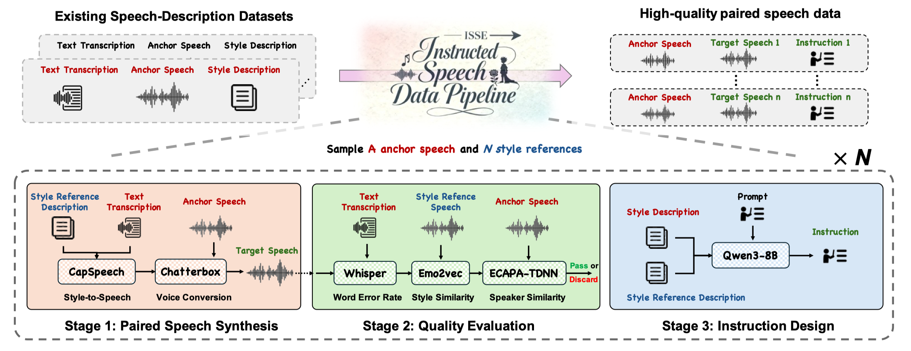

ISSE: An Instruction-guided Speech Style Editing Dataset and Benchmark
Yun Chen1, Qi Chen2,
Zheqi Dai3,
Arshdeep Singh1,
Philip J.B. Jackson1,
Mark D. Plumbley1,*
1Centre for Vision, Speech and Signal Processing, University of Surrey, United Kingdom
2ByteDance Intelligent Creation, China
3The Chinese University of Hong Kong, China
Abstract
Speech style editing refers to modifying the stylistic properties of speech while preserving its linguistic content and speaker identity. However, most existing approaches depend on explicit labels or reference audio, which limits both flexibility and scalability. More recent attempts to use natural language descriptions remain constrained by oversimplified instructions and coarse style control. To address these limitations, we introduce an Instruction-guided Speech Style Editing Dataset (ISSE). The dataset comprises nearly 400 hours of speech and over 100,000 source-target pairs, each aligned with diverse and detailed textual editing instructions. We also build a systematic instructed speech data generation pipeline leveraging large language model, expressive text-to-speech and voice conversion technologies to construct high-quality paired samples. Furthermore, we train an instruction-guided autoregressive speech model on ISSE and evaluate it in terms of instruction adherence, timbre preservation, and content consistency. Experimental results demonstrate that ISSE enables accurate, controllable, and generalizable speech style editing compared to other datasets.
Framework

Figure 1: Overall architecture of the proposed framework.
Dataset Speech Samples
Source Speech: A sentence describing the intended speaking style.
Target Speech: An audio sample representing the target speaker identity.
Instruction: A sentence that describes the intended style transformation from source speech to target speech.
Transcript
Source Speech
Target Speech
Instruction
No, snow is not expected on Saturday.
Convert the source speech to a monotonous, crisp, guttural, measured, loud style with vocal fry.
You don't have to be sorry for my loss. You can find me a flight to Houston by typing into your computer there.
Convert the source speech to a calm, slow-paced style.
Gotcha, okay. I can't believe I didn't get that the first time. I thought it was a literal pot of gold.
Convert the source speech to a animated, happy tone with a measured pace.
I'm so grateful. I know that you have other friends that you could have chosen to bring with you, but...
Convert the source speech to a booming, crisp, animated, angry tone with a shrill, loud volume.
And so you get combinations of primary colors as the air pressure, as you get higher, the air pressure gets lower.
Convert the source speech to a flowing, sing-song, slow, confused style.
She picked up a letter opener and she thrust it right into Rachel, time and time again!
Convert the source speech to a nasal, enunciated, authoritative, flowing, singsong style with a slow speaking speed.
It's gonna be sunny, with temperatures going from sixty eight to seventy eight today in Covington.
Convert the source speech to a slow, calm, smooth, and rhythmic style.
I mean, you paid for it, you have to take a bite.
Convert the source speech to a slow, sad tone.
Did you purchase a doll at a store called "Toys and Treasures"?
Convert the source speech to a measured, high-pitched, fast-paced style.
Done! Purchase is complete. Is there anything else?
Convert the source speech to a measured, fast-paced style.
I'm about out of patience right now, so if you don't politely walk yourself to the very back of the line right now...
Convert the source speech to a calm, measured tone.
What do you wanna talk about, rising interest rates or global warming?
Convert the source speech to an authoritative, measured, nasal tone with whispered, singsong passages.
Tuesday, February eleventh, twenty twenty five will be in four years and seven months.
Convert the source speech to a fast-paced, happy tone.
Aw, man, look what I done did now. They all know it was me. I can't get out of this one. They're just all going to tell each other it's just going to go around the whole school sooner or later. Man, I shouldn't have did that today.
Convert the source speech to a loud, rapid, measured, crisp, and shrill tone.
Oh, that thing's not baked. That thing's not baked.
Convert the source speech to a animated, singsong, expressive, crisp with a measured speed, silky tone, loud projection.
It's about a charge of malicious mischief.
Convert the source speech to a cheerful, slow, animated tone.
LlasaEdit Samples
Text Prompt: A sentence or phrase that describes the intended speaking style.
Source Speech: The original input speech containing the content to be retained.
Source Speech
Audio Prompt
Text Prompt
UniVST
AINN
Vevo
StyleVC
Whispering softly, her pitch remains high.
Her low-energy voice contrasts with her heartbroken high key.
The heartbroken man speaks in a rich, low voice with a measured cadence.
Speaking quickly with a high tone, her amused energy remained subdued.
A livid man addresses topics with a standard pitch, engaging in discourse at a usual speed, and with an undertone of low energy.